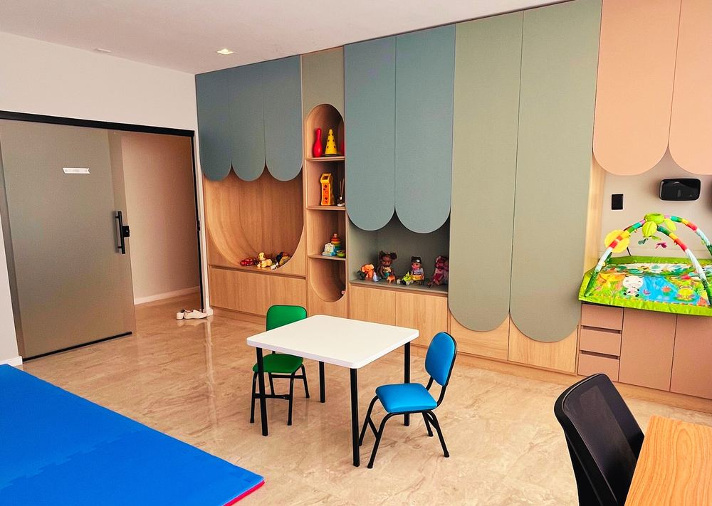
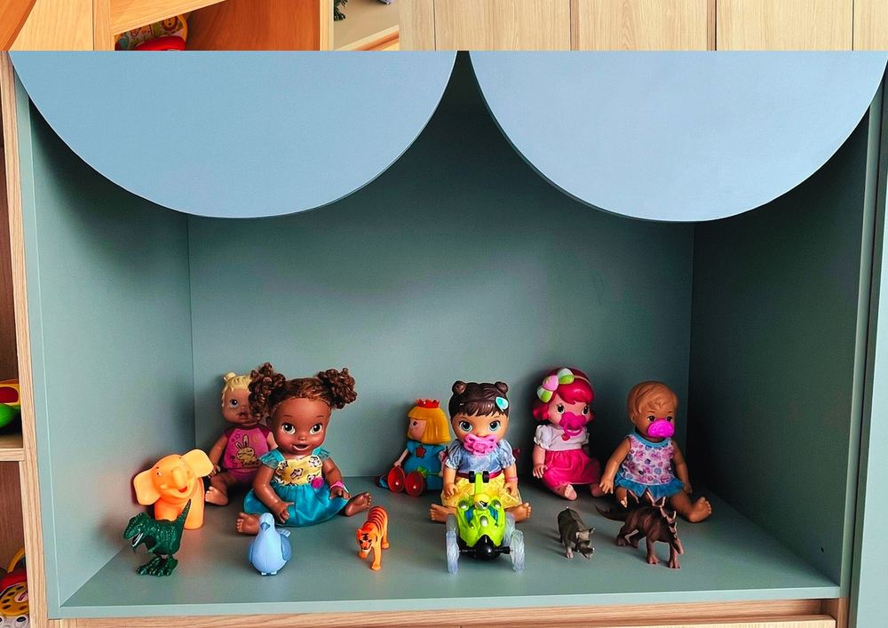
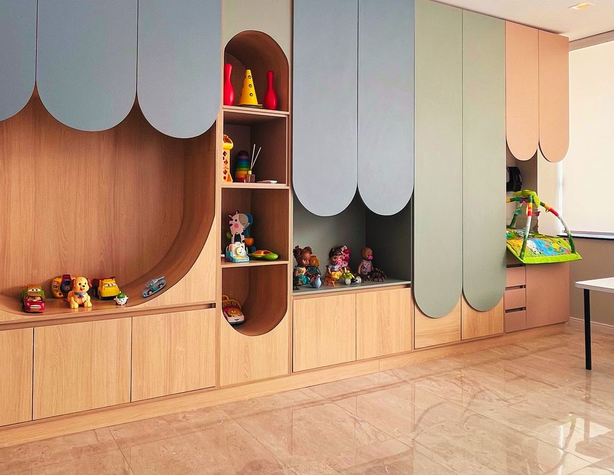

"Comunicar é conectar, e cada voz importa."
Cuidar da comunicação é também cuidar do desenvolvimento, da autonomia e da qualidade de vida.
Ofereço atendimento fonoaudiológico presencial em Manaus/AM, com um olhar individualizado e acolhedor para cada paciente e sua família. Meu trabalho é voltado principalmente ao desenvolvimento da linguagem e da fala em crianças, com atenção especial ao universo do Transtorno do Espectro Autista (TEA).
Uso métodos reconhecidos e baseados em evidências para construir, junto com cada criança e seus responsáveis, formas mais claras e potentes de se expressar e se conectar com o mundo.
Cada abordagem é escolhida e combinada de acordo com as necessidades únicas de cada paciente.
Avaliação e estimulação da linguagem e da fala, com foco especial no desenvolvimento comunicativo de crianças dentro do espectro autista.
Estratégias de Análise do Comportamento Aplicada voltadas ao autismo, favorecendo aprendizagem e novas habilidades comunicativas.
Técnica de estimulação motora-verbal (tátil-cinestésica) que apoia a produção da fala em crianças com dificuldades motoras de fala.
Sistema de Comunicação por Troca de Figuras, ferramenta de comunicação alternativa para crianças não-verbais ou com fala emergente.
Um consultório lúdico e colorido, projetado para que cada criança se sinta segura, curiosa e à vontade durante o atendimento.

Sala de atendimento
Materiais terapêuticos
Cantinho lúdicoAtendimento presencial em Manaus/AM. Envie uma mensagem e agende uma conversa para entender como posso ajudar.
(92) 99214-2101 · Manaus/AM